Art Direction — other design experience
Background
Most of the work here comes from previous roles as an art director, stylist, and designer for a leading online furniture retailer, working closely with product design and marketing to create styling concepts that captured the attention of target markets. The work covered directing, conceptualizing, styling, and managing a team through on-location and in-studio photoshoots — following the full design process (brainstorming, research, ideation, trend analysis, concept boards) to define color, layout, product and prop placement, hierarchy, and lighting in ways that felt trendy and aspirational, making the customer's buying choice easier.
Much of the work involved combining physical photoshoots with technology — full shoots are expensive and time-consuming, and blending in post-production work eased that process considerably. The team experimented heavily with reducing launch time, including building 3D models and styling entirely through tools like AutoCAD, Photoshop, and Illustrator to get products looking as close to reality as possible. What's shown here is a mix of both approaches, spanning living, dining, kitchen, outdoor, study, storage, decor, and other furniture and decor categories — alongside ongoing research into the ecommerce furniture retail space to stay ahead and keep styling itself taken seriously.
Process
The process generally starts once a product is sourced — or occasionally designed in-house — and I'm briefed on its material, style, source, and any standout qualities, along with its price point, which shapes whether it reads economy, luxury, or somewhere in between and heavily informs the styling direction. From there, a meeting with sourcing, product, marketing, and branding teams shapes how we want to collectively position the product in the market, combining intuition with research to land on the strongest direction.
From there I conceptualize the styling and build a rough mood board for feedback, source the props, and set the shoot — taking on the role of director, stylist, and team manager alongside a photographer and crew, shooting multiple options until the right shot lands. Post-production is where a lot of the real magic happens: props too expensive for the shoot's budget can often be added smartly in post, giving the image its finishing touch. The final image goes to other teams for review, and once approved, goes live for the product launch. We track how each product performs and apply those learnings to future styling — some directions consistently outperform others, and each project is a chance to improve on the last.
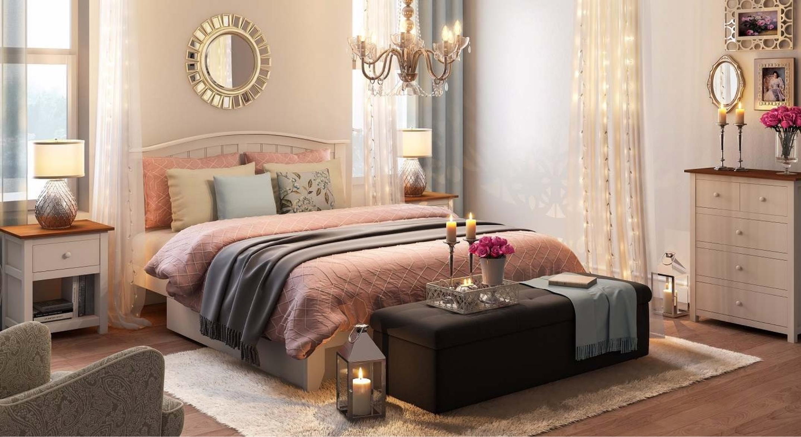
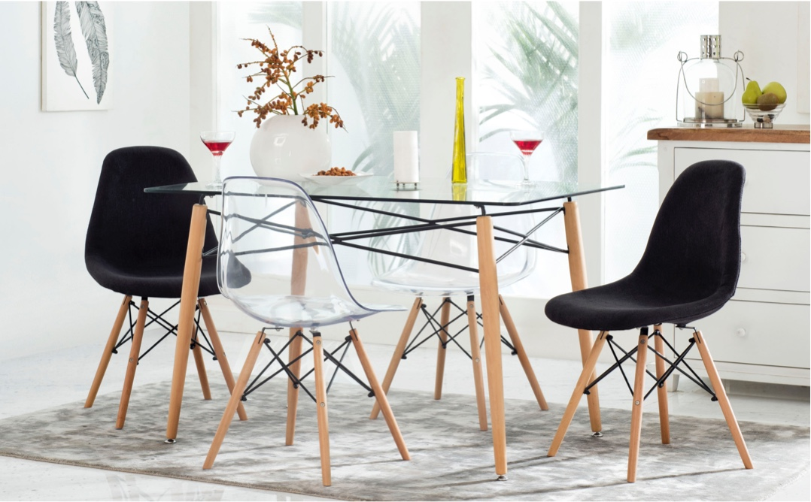
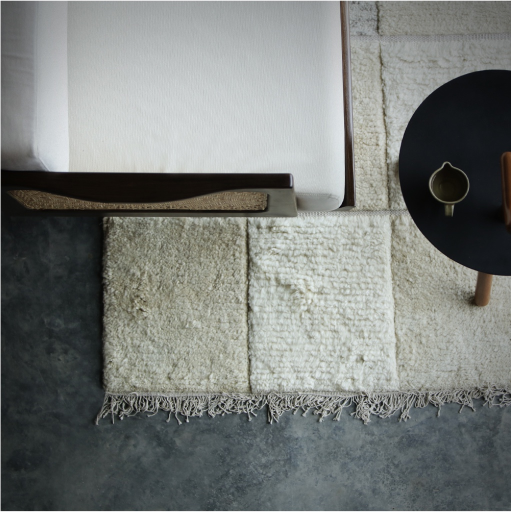
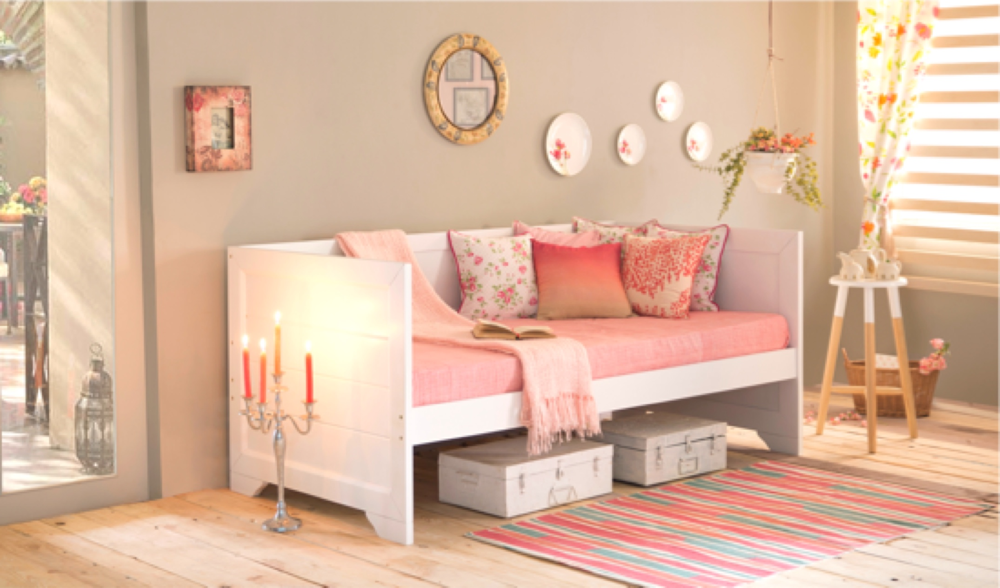
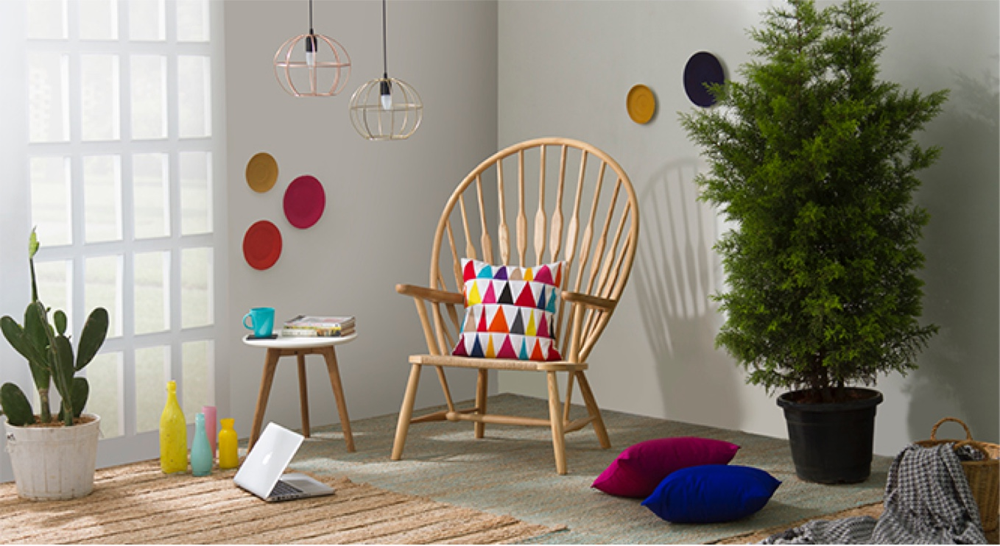
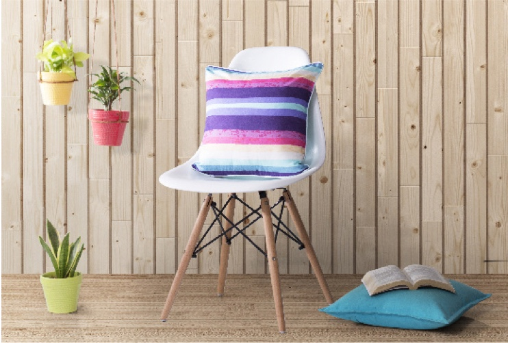
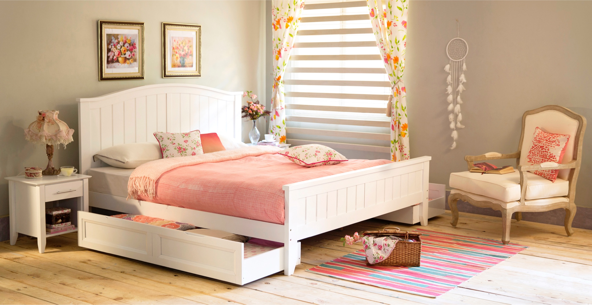
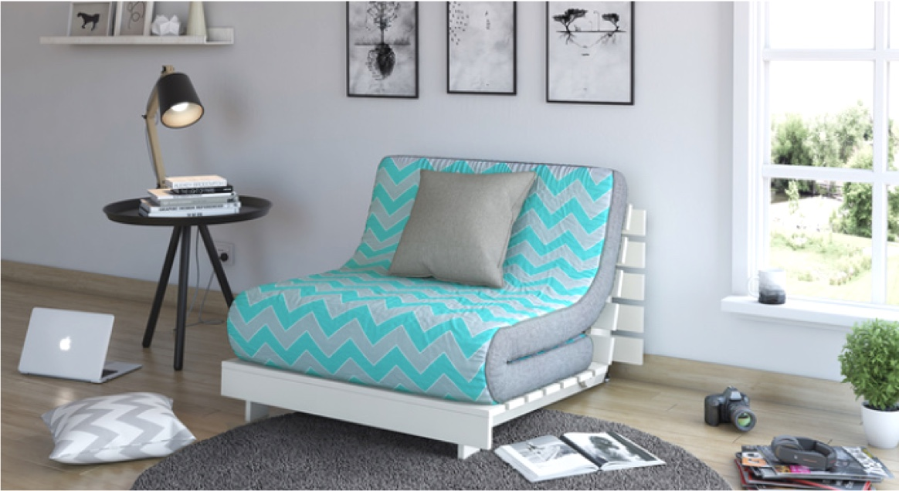
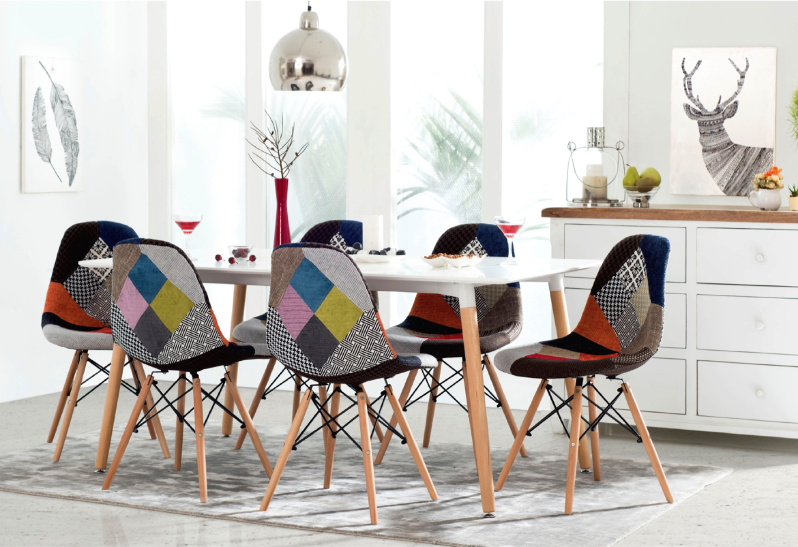
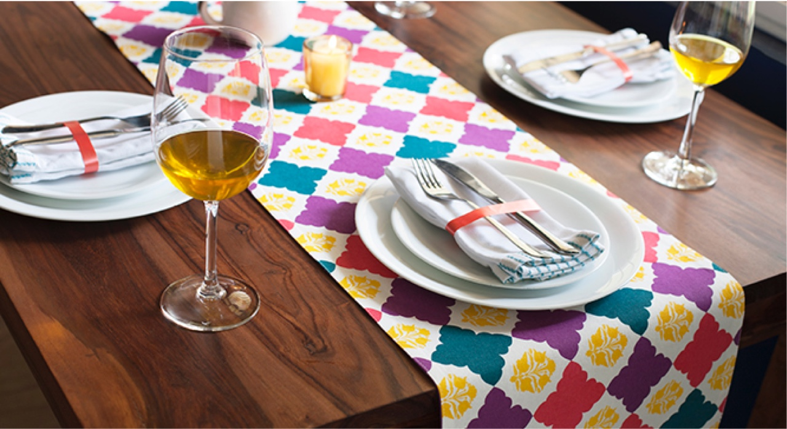
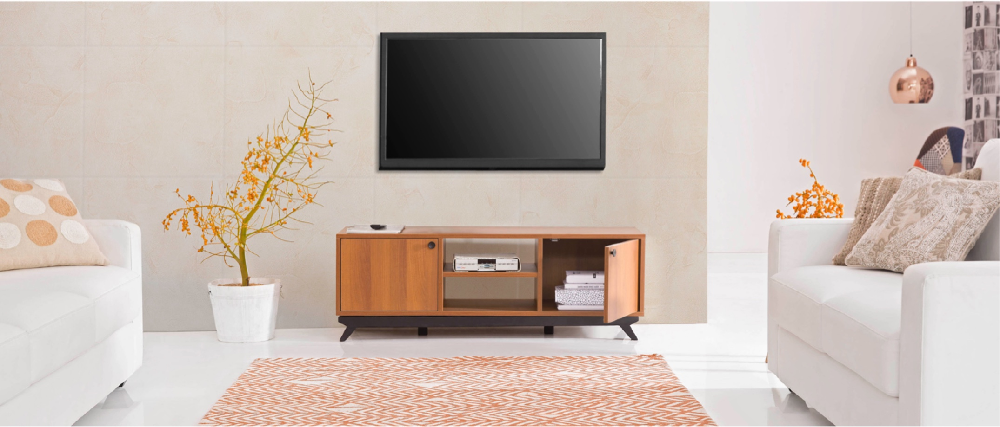
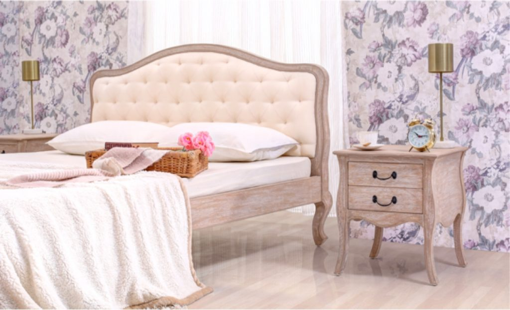
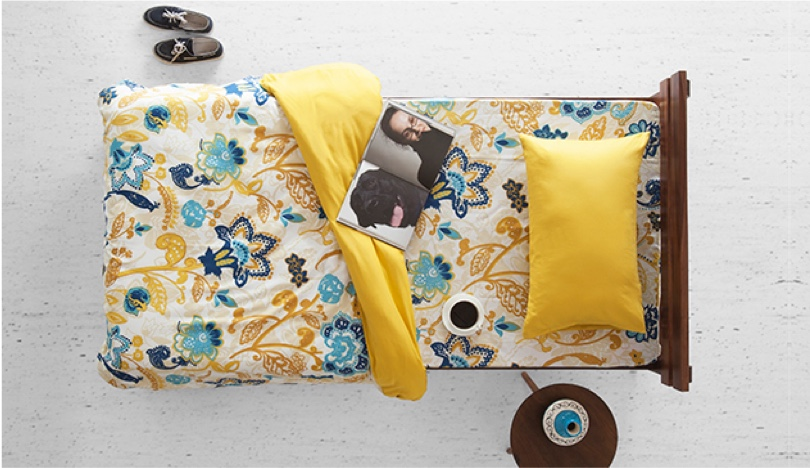
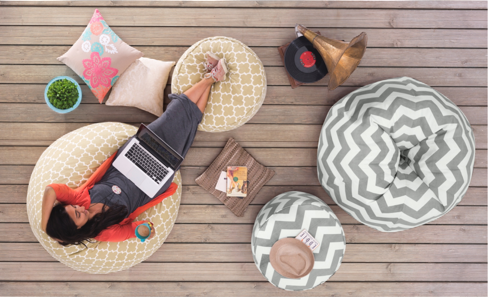
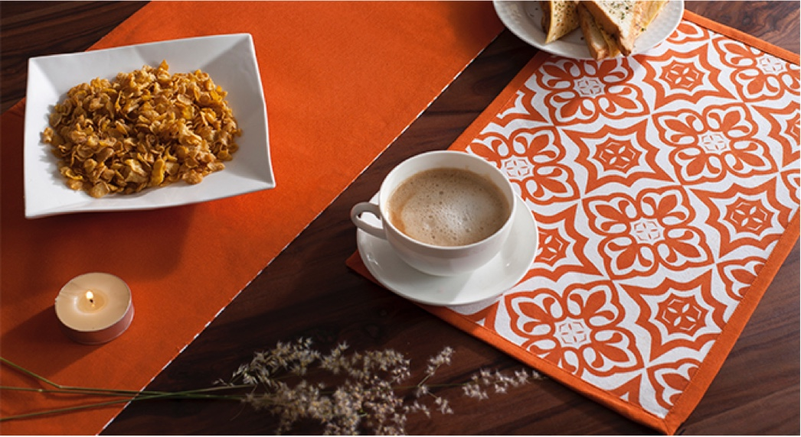
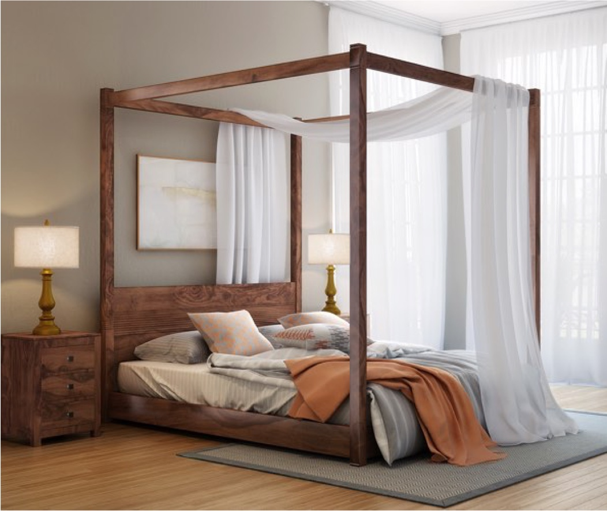
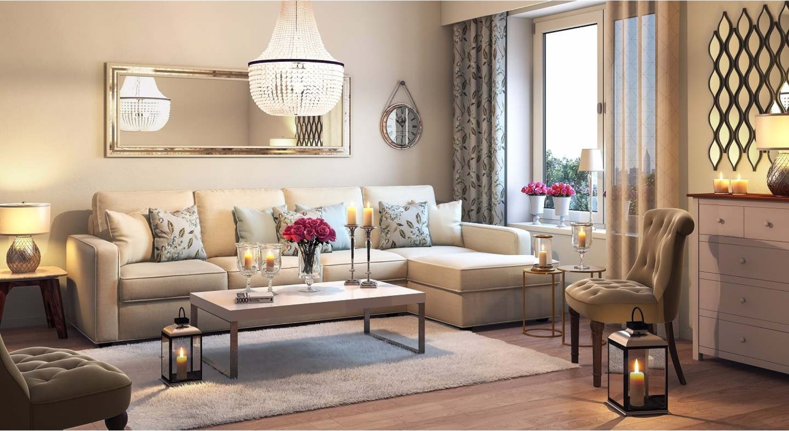
Conclusion
These projects built a real sense of process — not just the design process, but everything that comes with working: budget management, working under pressure and tight schedules, keeping the customer's perspective front and center, working toward the health of the business, taking feedback constructively, staying aligned with company goals, team management and collaboration, meeting deadlines, sourcing, scheduling, and more. Designing is a process, and the love for that process only grows with every project — brainstorming, research, conceptualization, and trend analysis, all working together with business goals and the target audience to find the right solution for each product.